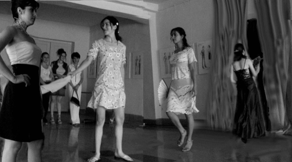

«БОМБА» БЕЗ ПОМПЫ
репортаж Ш. УГЛАЦЯНА
4 года назад это было “бомба”-шоу.
Зал ПОЛИТа - битком; люди стояли в проходах - не протолкнуться; дышать нечем, несмотря на то, что боковая дверь зала распахнута в темень летней ночи.
За что страдали люди? Да ещё и платили за билет на эти муки!?
Потому что это было “бомба”-шоу.
Впервые в Степанакерте проводился показ мод. По подиуму вихлястыми походками вышагивали модели в причудливых нарядах, чтобы застыть на миг, эффектно выфуфырив линию бедра и впялив томный взор поверх взопревших зрительских рядов в дальний угол - оазис мглы средь паводка прожекторных лучей.
Короче – всё как по телевизору, но собственными силами и с привлечением местных кадров; порой и не распознать было в очередной модели девушку из своего же “тага”, пока не услышишь бормотанья соседей по ряду: «Так это ж – Рузанна!»
Такую вот «бомбу» устроил Институт искусств имени Гюрджана для показа дипломных работ своих выпускников – модельеров одежды.
Однако, повторяем, рванула эта «бомба» в 2001 году, а за 4 года много чего протекло. Зритель избаловался наездами эротических трупп стриптизной самодеятельности и перестал валить валом на показ одежды: запросы, натурально, стали глубже.
Правда, родственники и друзья выпускниц-модельеров и нарядоносных моделей продолжали заполнять зал ПОЛИТа, но уже без прежней переуплотнённости.
Ну, а в текущем году выпускниц оказалось всего трое; и у каждой дипломной одежды на полдесятка моделей. Осилят, спрашивается, родственники двадцати девушек окупить своими билетами расход на аренду зала (до 30 тыс. драмов), на потчевание и содержание высоких дизайно-художественных гостей, приглашаемых из Еревана? Да и хореографу за постановку походки моделей тоже платить надо.
Так что на этот, четвёртый, раз всё устроили предельно функционально. Зал не арендовали, билетов не продавали, а провели показ в фойе все того же ПОЛИТа
(о, добрейшая Нона Гевондовна, директриса ПОЛИТа!).
На хореографе тоже сэкономили: дипломантки – Ануш, Армине и Цовинар - попросили своих подружек из карабахского госансамбля народного танца выступить моделями.
Комиссия тоже составилась из местных экспертов.
И очень даже неплохо получилось, потому что фойе украсили эскизами выпускников и не забыли расставить ряды лёгких стульев для родственников и прочих болельщиков.
Вобщем, показ состоялся в спокойной деловой атмосфере, при свете дня, без помпы и потогонного ажиотажа, но зато было там главное – молодость, красота и знание своего дела.